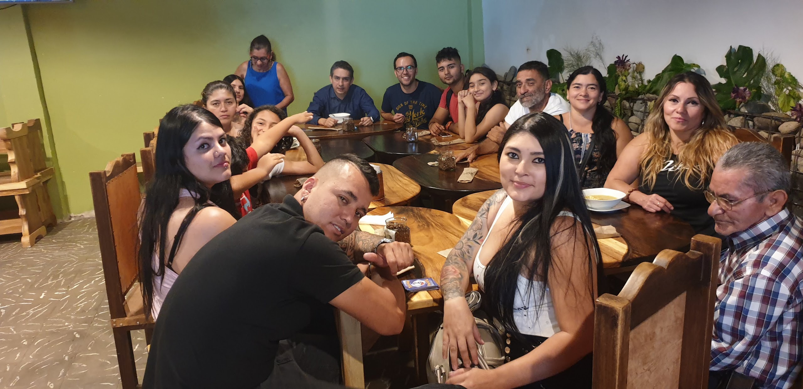
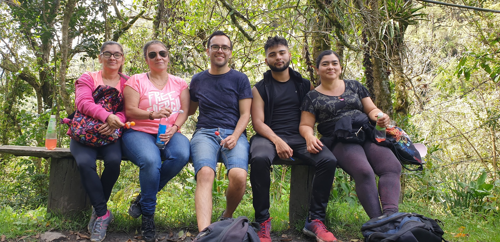

My Family: The People Who Matter Most

Introduction
Family is an important part of my life. They are the people who support me, teach me valuable lessons and share special moments with me. In this post, I want to talk about my family and explain why they are so important to me.
What I Appreciate About My Family
Every family is different, and each one has its own story. I appreciate the time we spend together, the conversations we have and the way we help each other.
My family has taught me important values such as respect, responsibility, patience and love. I believe that having people who support you is very important in life.
A Special Memory
One of my favorite memories with my family was in 2019, when all my family members came together again after spending time apart. It was a very special occasion because we had the opportunity to reconnect, share experiences, laugh together and enjoy each other's company.
During that time, we visited different places, shared wonderful moments and created new memories. It was beautiful to have everyone together again, spend time as a family and feel that special connection we share.
It was a meaningful experience because it reminded me how important family is and how valuable it is to enjoy the moments we have together. I will always remember 2019 as a special year because we were able to reunite and create memories that I will cherish forever.
My Family and Their Importance
My family is very important to me. They have always supported me and helped me become the person I am today.
Family Traditions and Moments Together
One of the things I enjoy most about my family is the time we spend together. We like getting together, sharing meals, talking about our experiences and enjoying special occasions. These moments allow us to stay connected and strengthen our family relationships.
I believe that family traditions are important because they create beautiful memories and bring people closer together. Even simple moments can become meaningful when we share them with the people we love.
What Family Means to Me
For me, family means love, support, unity and understanding. It means having people who care about you and who are there during both good and difficult times.
I have learned that family is not only about sharing the same home, but also about being present, helping each other and creating meaningful memories. That is why I believe family is one of the most valuable things in life.
